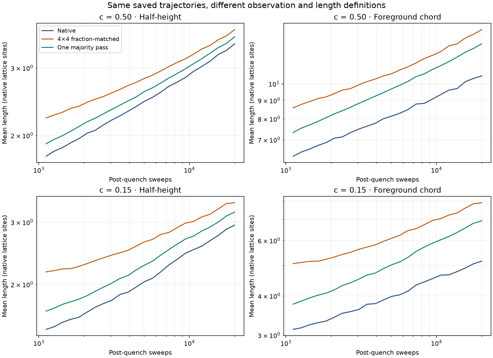
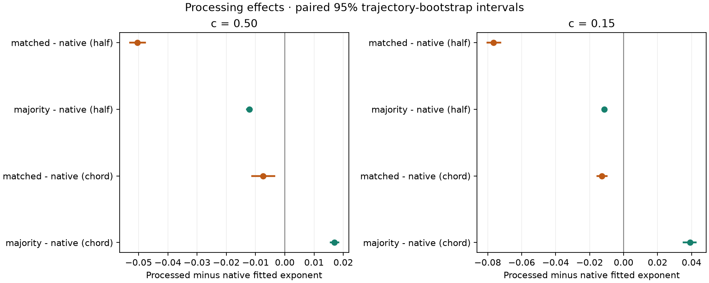

26 September 2026 · AI-assisted exploratory appendix · not a new holdout or an external review.
The same 16 archived 128×128 Kawasaki trajectories (eight each at c = 0.50 and 0.15), isotropic Jx = Jy = 1 and T = 0.65 Tc. All six measurement series use the same positive, resolved times in each composition. No new dynamics were run. These short windows are an observation test, not an asymptotic-growth test.
Observation: native pixels; origin-zero 4×4 block means with nearest-count fraction matching; or exactly one simultaneous five-site majority pass. Five fixed tie priorities are averaged within each matched trajectory/time, not counted as extra independent runs. Only the observation filter uses periodic neighbours.
Length: the existing normalized finite-image covariance half-height, or the number-weighted mean complete foreground chord across horizontal and vertical lines. Foreground means the +1 species. Chords touching image edges are excluded and counted; both measurements are non-wrapping. Coarse pixel spacing is converted back to native lattice sites. Neither length is a uniquely correct domain size.


Eight independent trajectories; 24 of 24 times retained. Shared window: 1119–20000 post-quench sweeps. Removed times: [].
| series | alpha | low | high |
|---|---|---|---|
| native_half | 0.23141 | 0.22486 | 0.23806 |
| matched_half | 0.18094 | 0.17568 | 0.18672 |
| majority_half | 0.21924 | 0.21283 | 0.22577 |
| native_chord | 0.17623 | 0.17072 | 0.18198 |
| matched_chord | 0.16886 | 0.16472 | 0.17329 |
| majority_chord | 0.19311 | 0.18730 | 0.19901 |
| contrast | delta | low | high |
|---|---|---|---|
| matched - native (half) | -0.05047 | -0.05293 | -0.04782 |
| majority - native (half) | -0.01217 | -0.01295 | -0.01127 |
| matched - native (chord) | -0.00738 | -0.01110 | -0.00364 |
| majority - native (chord) | 0.01688 | 0.01565 | 0.01831 |
| chord - half (native) | -0.05518 | -0.06083 | -0.05035 |
| chord - half (matched) | -0.01208 | -0.01757 | -0.00584 |
| chord - half (majority) | -0.02613 | -0.03075 | -0.02187 |
| matched: chord shift - half shift | 0.04310 | 0.03999 | 0.04619 |
| majority: chord shift - half shift | 0.02905 | 0.02789 | 0.03056 |
Eight independent trajectories; 24 of 24 times retained. Shared window: 1119–20000 post-quench sweeps. Removed times: [].
| series | alpha | low | high |
|---|---|---|---|
| native_half | 0.24214 | 0.23284 | 0.25011 |
| matched_half | 0.16563 | 0.15959 | 0.17108 |
| majority_half | 0.23074 | 0.22150 | 0.23855 |
| native_chord | 0.17816 | 0.17123 | 0.18481 |
| matched_chord | 0.16534 | 0.15939 | 0.17086 |
| majority_chord | 0.21730 | 0.20709 | 0.22652 |
| contrast | delta | low | high |
|---|---|---|---|
| matched - native (half) | -0.07651 | -0.08006 | -0.07255 |
| majority - native (half) | -0.01140 | -0.01231 | -0.01054 |
| matched - native (chord) | -0.01281 | -0.01534 | -0.00999 |
| majority - native (chord) | 0.03914 | 0.03535 | 0.04255 |
| chord - half (native) | -0.06398 | -0.06873 | -0.05924 |
| chord - half (matched) | -0.00028 | -0.00564 | 0.00453 |
| chord - half (majority) | -0.01344 | -0.01937 | -0.00832 |
| matched: chord shift - half shift | 0.06370 | 0.06025 | 0.06743 |
| majority: chord shift - half shift | 0.05054 | 0.04640 | 0.05394 |
Slopes are ordinary least-squares fits of log ensemble-mean length against log sweeps. The 1,000 paired bootstrap draws resample eight whole trajectories, using the same indices for all series (seed 912). The percentile 95% intervals describe run-resampling uncertainty; they do not remove systematic bias, establish a mechanism, or cover every possible analysis choice. The 18 correlated contrasts are descriptive and not adjusted for multiple comparisons. Small, opposite or unresolved effects must also be reported.
Censoring below is the fraction of foreground runs touching an edge, not the phase fraction. The ranges cover the time history of ensemble-mean diagnostics, with ties averaged within runs. Discarding edge chords favours shorter chords and can bias the slope as domains grow. This chord convention is not a finite-size correction. The majority pass can change observed species fraction.
| composition | operator | fraction_min | fraction_max | censored_min | censored_max | complete_min | complete_max |
|---|---|---|---|---|---|---|---|
| 0.50000 | native | 0.50000 | 0.50000 | 0.09562 | 0.16548 | 1321.62500 | 2392.37500 |
| 0.50000 | matched | 0.50000 | 0.50000 | 0.12915 | 0.21244 | 232.72500 | 416.07500 |
| 0.50000 | majority | 0.49951 | 0.50063 | 0.11005 | 0.19800 | 1058.87500 | 2039.25000 |
| 0.15000 | native | 0.15002 | 0.15002 | 0.04670 | 0.09408 | 875.50000 | 1504.50000 |
| 0.15000 | matched | 0.15039 | 0.15039 | 0.07588 | 0.13990 | 137.02500 | 225.00000 |
| 0.15000 | majority | 0.13526 | 0.14275 | 0.05565 | 0.12527 | 615.50000 | 1124.62500 |
The original native/fraction-matched half-height estimates and paired intervals were independently recomputed by this runner on their original time mask and matched the archive to 1e−12. Known-size chord, boundary, unit-conversion, simultaneous-filter and synthetic-slope tests are supplied. Input and source hashes were captured before measurement and checked again afterwards. This is internal software verification, not independent academic validation.
The data and primary effects were already known before this analysis; the protocol is a local dated plan, not an external preregistration. The existing reviewer PDF and evidence pack were not changed. There is no quantitative prediction for a real alloy, proof of a new growth law, or novelty claim here.
Context: Majumder and Das (2010) use a majority-spin observation rule and interface-to-interface lengths; our finite, foreground-only chords are not their exact implementation. Ledesma-Alonso et al. address resolution sensitivity of microstructure descriptors.
All results and masks · Every measurement and tie outcome · All paired contrasts · Time-dependent diagnostics · Before-analysis hashes · After-analysis verification · Fixed exploratory protocol